🟡 Medium📅 2026-06-15🧩 Vigenère Cipher / Frequency Analysis by Key Position
📋 Level Summary
Field
Value
Type
Krypton
Cipher / Technique
Vigenère Cipher / Frequency Analysis by Key Position
Difficulty
🟡 Medium
Date
2026-06-15
🔍 Description
The Vigenère cipher is a polyalphabetic substitution cipher that uses a repeating keyword to encrypt plaintext. Each letter of the plaintext is shifted by the corresponding letter of the key (cycling through the key). Unlike a monoalphabetic cipher, the same plaintext letter can produce different ciphertext letters depending on its position — making simple frequency analysis ineffective. However, if the key length is known, the ciphertext can be split into groups (one per key position), and each group treated as a separate Caesar cipher. Standard frequency analysis can then be applied to each group independently to recover each key letter.
🎯 End Goals
Use the known key length (6) to split the intercepted ciphertext into 6 positional groups
Apply per-column frequency analysis to derive the full Vigenère key
Confirm the key against the second intercepted file
Decrypt the krypton5 password using the recovered key
SSH into krypton5 using the decoded password
🪜 Steps to Reproduce
SSH into krypton4 and navigate to /krypton/krypton4/ to read the README and HINT
Read found1 and found2 to gather ciphertext for analysis
Split the ciphertext into 6 columns (by position mod 6) and run frequency analysis on each column to derive the key
Confirm the key against found2
Read krypton5 and decrypt it using the derived key
SSH into krypton5 using the decoded password
🧠 Analysis
Step 1 — Navigate and read level files Logged in as krypton4. Ran cd /krypton/krypton4 and ls -la to list files: found1, found2, HINT, krypton5, and README. Ran cat README which explained that this level uses a Vigenère cipher — a polyalphabetic cipher where each plaintext letter is shifted by the corresponding letter of a repeating key. The key length is 6. Ran cat HINT which confirmed: “Frequency analysis still works, but you need to analyze it by keylength. Analyse the 1st letter of the cipher text at offset 1, 7, 13, etc. — treat this as 6 different mono-alphabetic ciphers.”
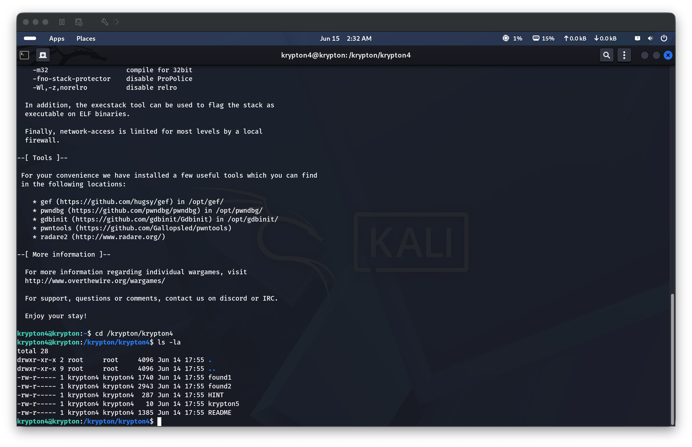
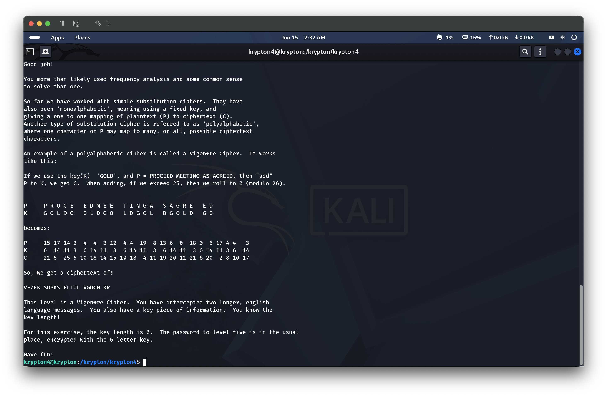
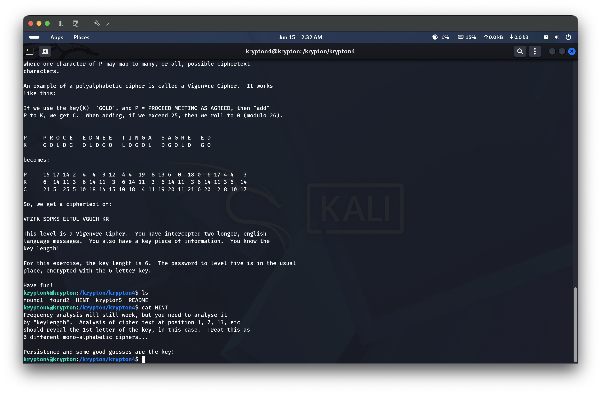
Step 2 — Read the intercepted ciphertext files Ran cat found1; echo to read the first intercepted message — a large block of uppercase ciphertext to be used for key recovery.
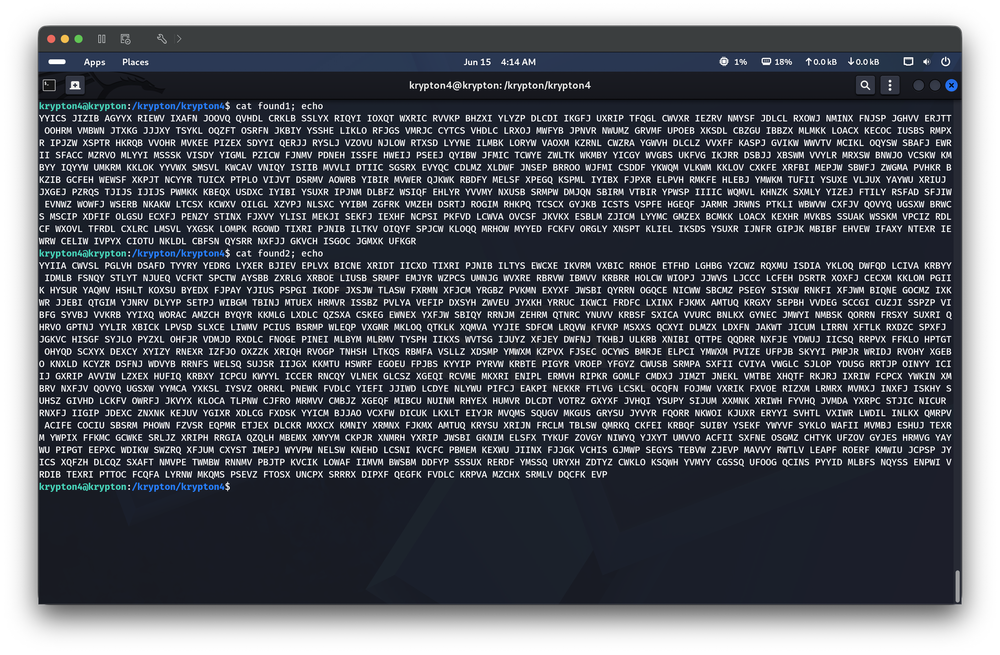
Step 3 — Frequency analysis on found1 to derive the key Fed found1 to Claude with the known key length of 6. Claude split the ciphertext into 6 columns (positions 0, 6, 12, … → column 0; positions 1, 7, 13, … → column 1; etc.) and ran chi-squared frequency analysis on each column against expected English letter frequencies. The per-column shift breakdown:
Column 0 → shift 5 → key letter F
Column 1 → shift 17 → key letter R
Column 2 → shift 4 → key letter E
Column 3 → shift 10 → key letter K
Column 4 → shift 4 → key letter E
Column 5 → shift 24 → key letter Y
Derived key: FREKEY. Decrypting found1 with this key produced clean English text — a passage from The Wonderful Wizard of Oz, confirming the key is correct.
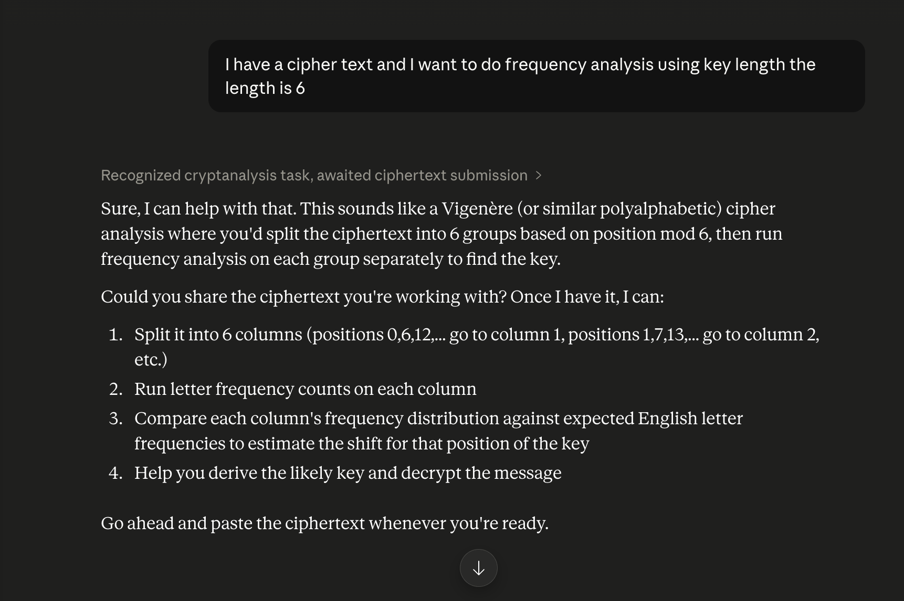
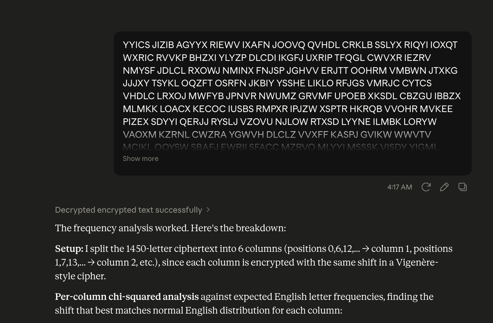
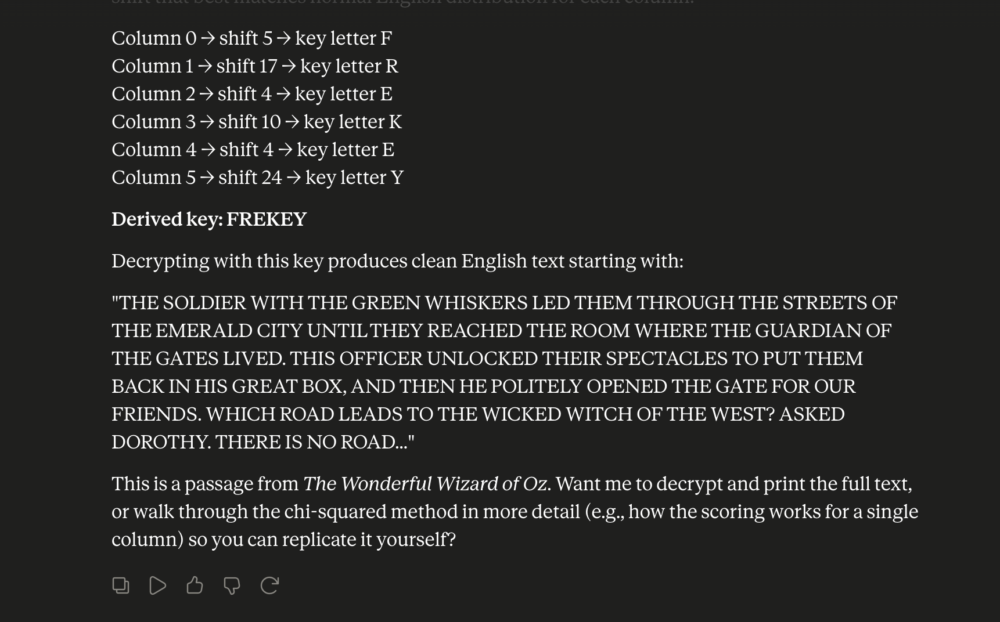
Step 4 — Confirm key with found2 Fed found2 to Claude with the same key length. The chi-squared scores came out cleaner overall (2453 letters vs 1450), giving more reliable per-column statistics. The same key FREKEY was derived, fully confirming the result.
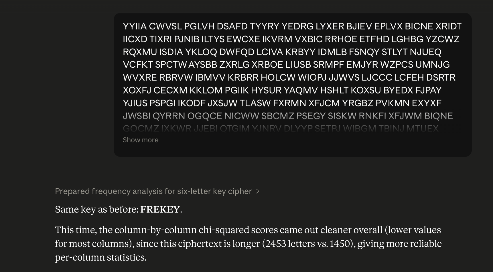
Step 5 — Read and decrypt the krypton5 password Ran cat krypton5; echo which showed the ciphertext HCIKV RJOX. Asked Claude to decrypt HCIKVRJOX using key FREKEY — the plaintext was CLEARTEXT.
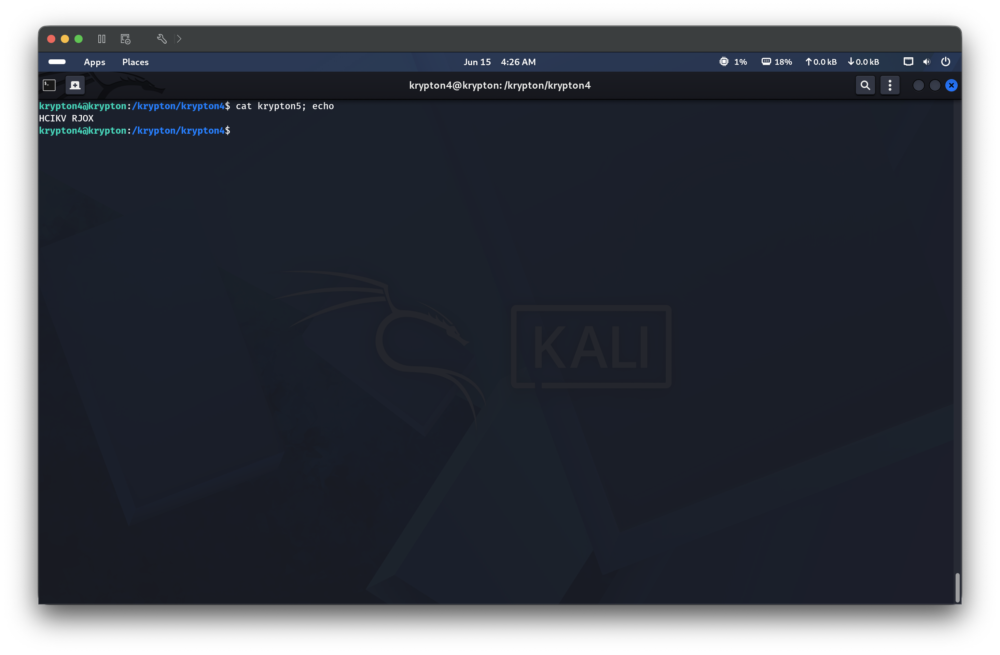
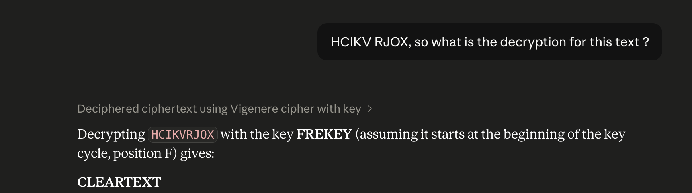
Step 6 — SSH into krypton5 with the decoded password Ran ssh krypton5@krypton.labs.overthewire.org -p 2231 and authenticated with password CLEARTEXT. The OTW welcome banner confirmed a successful login to the krypton5 shell.
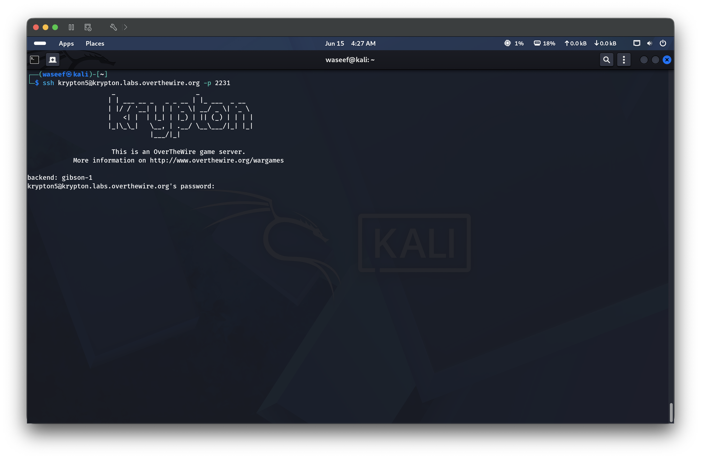
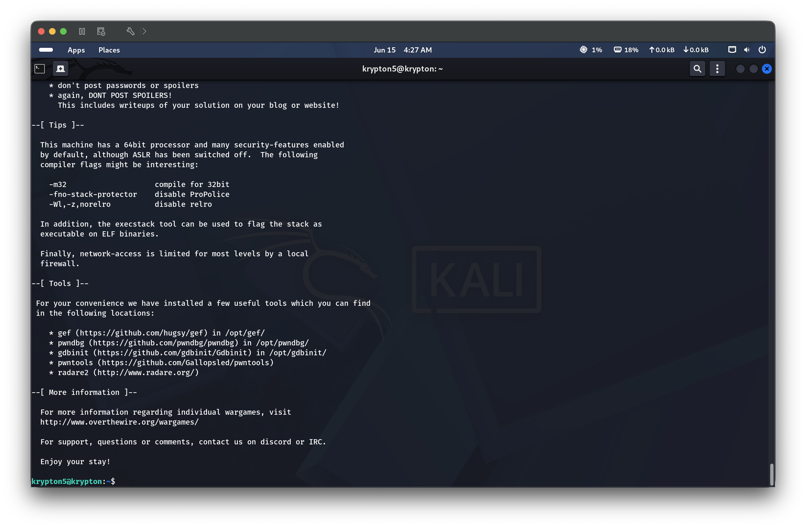
🔑 Key Concepts Learned
The Vigenère cipher is polyalphabetic — the same plaintext letter encrypts differently depending on its position in the key cycle, defeating simple frequency analysis
If the key length is known, the ciphertext can be split into independent Caesar cipher streams (one per key position), each crackable by standard frequency analysis
Chi-squared analysis measures how closely a letter distribution matches expected English frequencies — the shift that minimizes chi-squared is the most likely Caesar shift for that column
More ciphertext = more reliable statistics — found2 (2453 letters) gave cleaner results than found1 (1450 letters)
Claude can serve as a powerful cryptanalysis assistant — given the ciphertext and key length, it can automate the column-splitting and chi-squared scoring to recover the full key in seconds